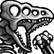

Item Utility Changes
Suit Changes
Item Placement Changes
Miscellaneous
- Bombs opens Wrecked Ship Reserve location
- Spazer opens Waterway and Botwoon hallway
- Samus begins with starter Charge Beam that does 30% charged shot damage
- Pseudo Screws and SBAs do full damage with starter Charge Beam
- Gravity Suit provides 50% heat damage reduction
- Varia and Gravity each add 50% damage reduction to enemy attacks and environmental damage
- Varia and Gravity stack to reach 75% reduction to enemy attacks and environmental damage
- Gravity is no longer restricted from being placed in Brinstar (other than Retro)
- Minor item ratio is 34 missiles - 14 supers - 18 power bombs
- 1/13 chance that Speed Booster will be logic progression to Green Brinstar
- 2/13 chance that Screw Attack will be logic progression to Green Brinstar
- 4/13 chance that Bombs will be logic progression to Green Brinstar
- 6/13 chance that Power Bombs will be logic progression to Green Brinstar
- Saving the animals behaves like the vanilla game
All of the updates above are changes featured in the DASH randomizer that are different from the 2017 Tournament logic, which was created by Total.
To view information about Total's randomizer on which DASH is based, click here:
https://itemrando.supermetroid.run/information
To view the changelog on Total's randomizer, click here:
https://itemrando.supermetroid.run

There will be a special DASH Randomizer one-day tournament on January 18, 2020 that will be featured on the
SpeedGaming Twitch channel. This tournament will feature 16 players who qualify for the tournament with the top 8 finishers winning cash prizes. The tournament will begin at 12:00 p.m. ET and will continue throughout the full day until it is completed.
For more information and a complete set of rules, click here:
https://dashrando.github.io/tournament.html

The DASH (Diversity and Selective Haste) Super Metroid Randomizer focuses on providing more options for runners to complete seeds by providing new functionality to Bombs, Spazer Beam, Gravity Suit, and Charge Beam. This randomizer seeks to open up Super Metroid even more by limiting the gating potential of certain items and item locations. DASH utilizes the Total logic from the 2017 Super Metroid Randomizer Tournament with the functionality changes to expand players' options to defeat bosses and progress through areas of the game.
For more information, please watch the three introduction videos that will outline all of the major changes that DASH adds on top of what the Total Randomizer created.

On Saturday, November 16, a DASH race between
Zoast and
Rossu was featured during the DreamHack Atlanta event. Twitch channel
NoResetSpeedrun hosted a charity marathon at the event, and
Kipp provided commentary on the run as well as providing basic information about DASH. You can watch the VOD of the race here:
https://www.twitch.tv/videos/510229319
A beta version of the DASH randomizer was featured in a Crowd Control race during SG Live 2019. The VOD features extensive discussion before the race and can be watched here:
https://www.twitch.tv/videos/500670759